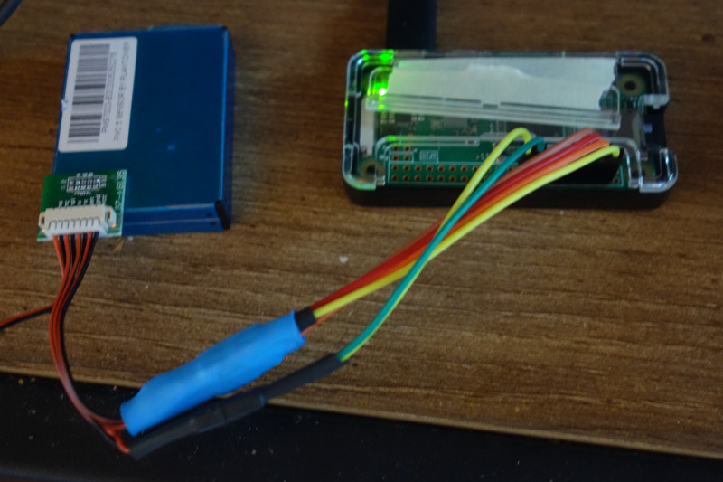

I got a PlanTower PMS7003 AQI sensor a while ago and finally got around to hooking it up. I was going to make a simple webserver to just display graphs, but my housemate Evan offered to set up Prometheus and Grafana if I wrote an exporter for Prometheus, so I did that instead. I used a Raspberry Pi Zero W that Evan had kicking around. This is ideal since it has WiFi and a built in serial port.
The hardware setup is pretty simple. The sensor runs on 5V but uses 3.3V logic for it's serial lines, this means I can wire it directly to the Pi's 5V, GND, TX, and RX pins. I also connected the sensor's SET and RESET pins to some GPIO pins, but they're currently unused. In the future I may use them to reset the sensor if I detect an error state, but that hasn't been an issue so far.
Initially I wrote the Prometheus exporter as a small python script but then decided it would be more fun to rewrite it in C. It's a very barebones web server (and almost certainly not compliant with HTTP standards), but it works enough that Prometheus doesn't complain.
Since all requests need to access the sensor and since the sensor can only handle one request at a time, there was no need to use threads to handle incoming requests. This meant I could ignore all concurrency problems by simply not using any concurrency. This server is queried every 15 seconds by Prometheus; there's no need for it to handle lots of requests.
One clever trick is to set VMIN and VTIME (see man 3
termios) such that read() won't read less than VMIN bytes unless
there's more than VTIME delay between bytes. Since I know how many bytes to expect in
response I can set VMIN to this size and not worry about read() returning
with less than the full response. Unfortunately read() will still block indefinitely
for the first byte, so it's useful to poll() first to timeout if there's no response.
We originally set this up on a Raspberry Pi 4 using podman to run Prometheus and Grafana. When we migrated to the Zero W Pi we discovered that there aren't Docker containers for arm32v6, so we had to switch to running them as normal binaries. Oh well.
Finally a note to anyone with these sensors: it's not documented in the datasheet, but after sending the command to switch to passive mode, the sensor sends an 8 byte response. I didn't bother trying to decipher what the response contains. Additionally there appears to be a (short) period after the sensor responds to a request where it won't recognize new commands. I work around this by just resending the command if I don't get a response within a second.
I've been wanting to try growing oyster mushrooms for a while but have been turned off by the price of spawn kits (usually $20). Plus I wanted to grow them on coffee grounds instead of an already prepared substrate. I noticed that my local grocery store sells oysters in clumps that often have some of the mycelium still intact and wanted to know if I could grow the oysters from that.
I sterilized a jar in the dishwasher and then saved coffee grounds in it until it was about half full. To try to keep things sterile I kept it in the freezer while I filled it. I then cut off the bottoms of the mushrooms (and ate the tops, yum!), broke them up and added them to the jar.
Within a day the mushrooms had grown fuzzy all over, presumably with mycelium not mold. I let it go for a while but it seemed to be quite slow so after a couple more days I sterilized a metal chopstick and stirred things up, hoping to get better contact between the mycelium and the grounds. Unfortunately after a couple more days I discovered blue-green mold growing in the jar and had to scrap the project.
My friend Cam (the one whose battery I fixed) also tried this out but sterilized his jars with a pressure cooker and chopped his mushroom bases up more finely. He's having better success, so I might try again and put more effort into keeping things sterile. I suspect opening my jar to stir things up was a mistake.
I have very little experience in this area and don't even know that what I think was mycelium wasn't really mold. If you know more about this or have any tips, tricks, or insights to share, please shoot me an email.